Bubbles の使い方
思いついたことを書いて、泡として漂わせておく todo アプリです。やっていないことを責めない作りにしてあります（達成率・連続日数・ご褒美の演出は出しません）。
この app の言葉
- 海
- 記録のひとまとまり。1つの海が、1つの同期の単位です（個人・共有・自分で作った海）。いちばん上の薄い帯と、左上の ≡ で切り替えます。海ごとに「この端末だけ」か「サーバー」と合わせます。下のタブの「海」は、今の海の泡が漂う画面の名前です。
- 入り江
- 海の画面の中の区切り。中央（どのタグのものも浮かぶ）、横一列に並べたタグごとの入り江、上の「長期保留」、下の「完了」があります。画面を長押しすると、入り江の一覧（引き）が出ます。
- 泡
- 書いたもの1つ。
- 盤
- 泡をタップすると下に開く、編集の面。
- 引き出し
- 左上の ≡。海の切り替えと、最近つかったもの・お気に入り・長期保留・タグごとの一覧。
- 引き
- 海の画面を長押しすると出る、入り江の一覧（並べ替え・入り江をふやす・やめる）。引き出しとは別のものです。
- タグ
- 泡に付ける印（仕事・買い物など）。横一列に並べたタグが入り江になります。
- 同期の先
- その海を合わせる相手。「この端末だけ」か、足したサーバー。同じサーバーの海は、住所と鍵を共有します。
- ID
- 海を見分ける裏の名前（画面の名前とは別）。ほかの端末で同じ ID・同じサーバーの海を足すと、同じ海になります。
- 気孔
- 海の底の右の小さな岩。画面に入りきらない泡を、押すと1つずつ呼び出します。
1. 画面の見方
海に書く
下の欄に書いて「送信」を押すと、泡になって海に浮かびます。泡は時間とともにゆっくり漂います。左右の矢印の看板（「仕事」など）か背景をなぞると、となりの入り江（タグごとの区切り）へ移ります。上は「長期保留」、下は「完了」の入り江です。画面を長押しすると、入り江の一覧（引き）が出て、並べ替え・ふやす・やめるができます。
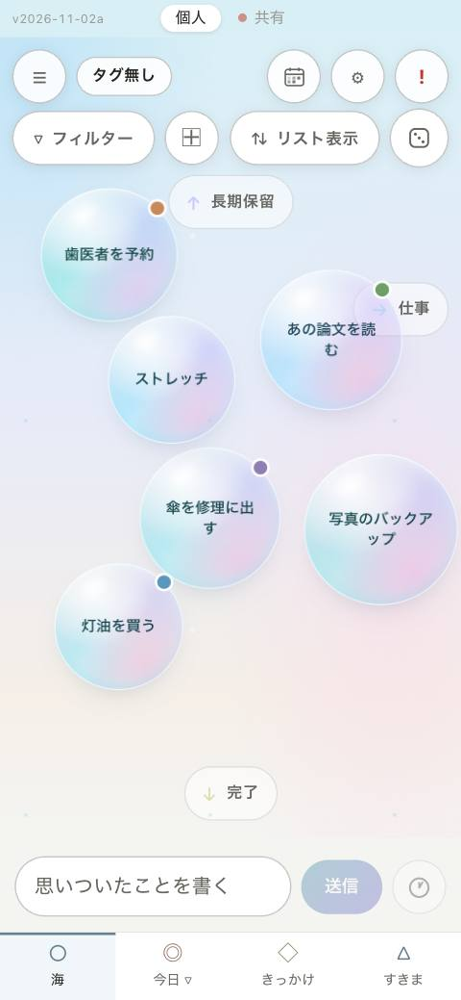
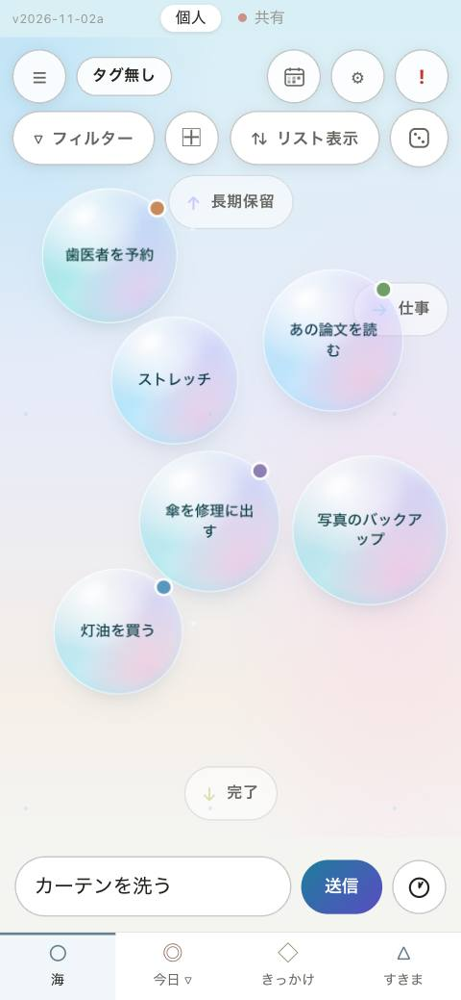
隠れている泡を呼ぶ（気孔）
海に浮かぶのは、画面に収まる数だけです（新しいものから）。入りきらない泡があるときは、海の底の右に気孔（小さな岩）が出て、口から小さな泡が昇っています。気孔をタップすると、隠れている泡が1つ気孔から生まれて海に入り、いちばん上にあった泡が押し出されて、はじけて隠れます。続けて押すと、順に入れ替わります。全部をまとめて見たいときは「⇅ リスト表示」です。
泡をタップする（盤）
泡をタップすると真ん中に来て、下に盤が開きます。名前の書き直し、「今日」「きっかけ」「すきま」などへの付け外し、次の一手、作業メモ、リンクがここにあります。「タスク開始」で5分の集中画面へ。
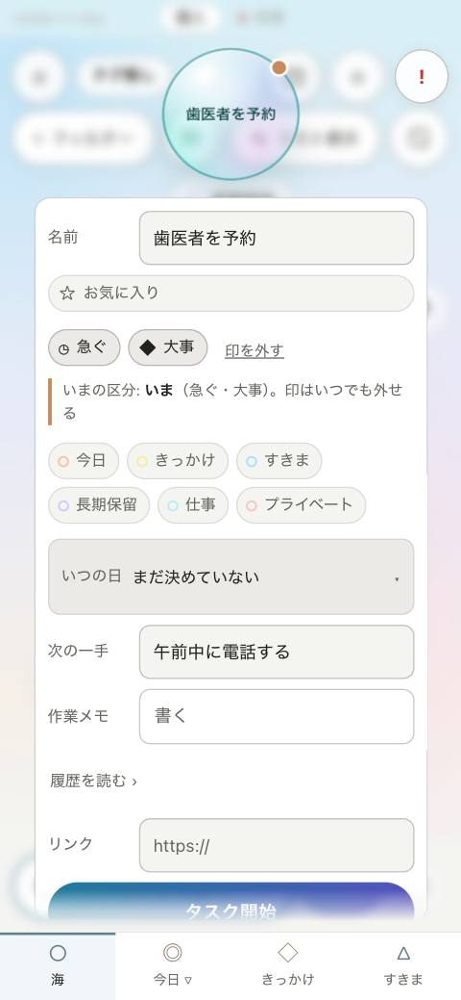
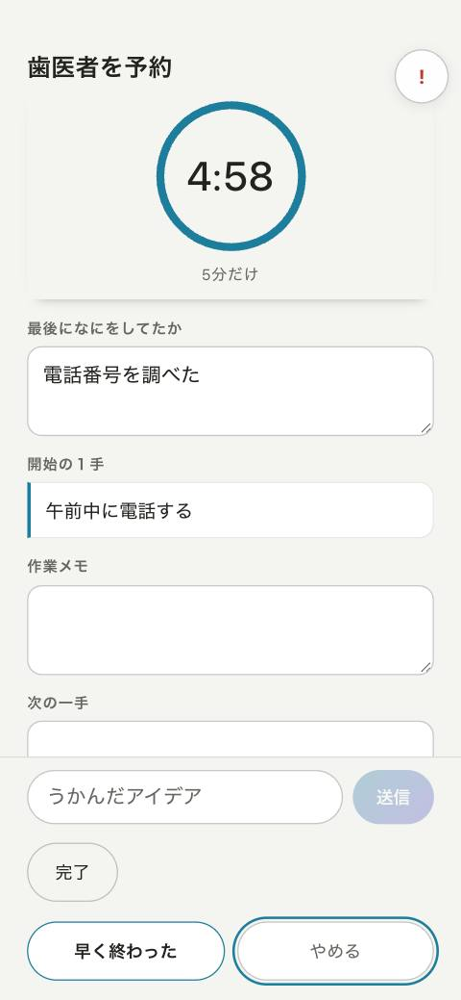
今日・きっかけ・すきま
下のタブで切り替えます。「今日」は今日やると決めたもの、「きっかけ」は「歯を磨いたら」のような行動にぶら下げるもの、「すきま」は「耳だけ空いている」などの状況ごとの枠です。海の泡は、タブへドラッグすると、そこにも置かれます（移動ではなく、増えます）。
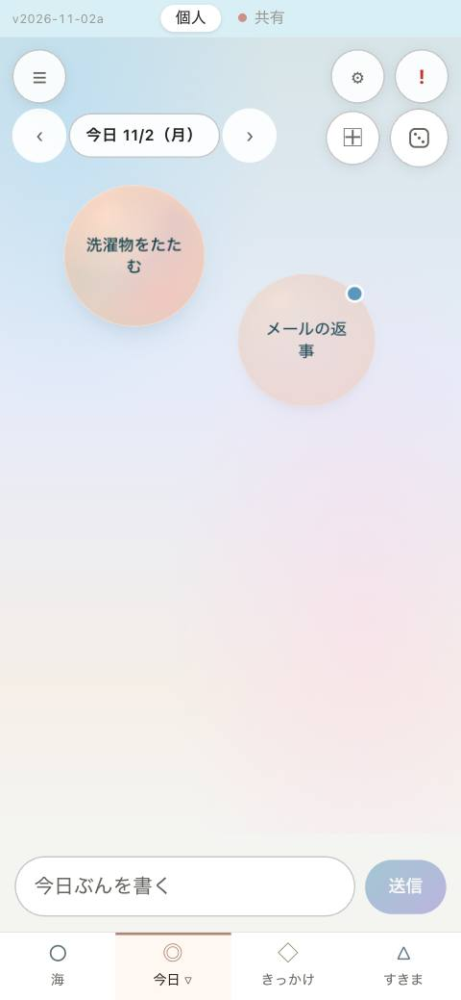
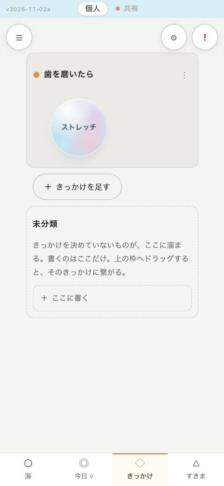
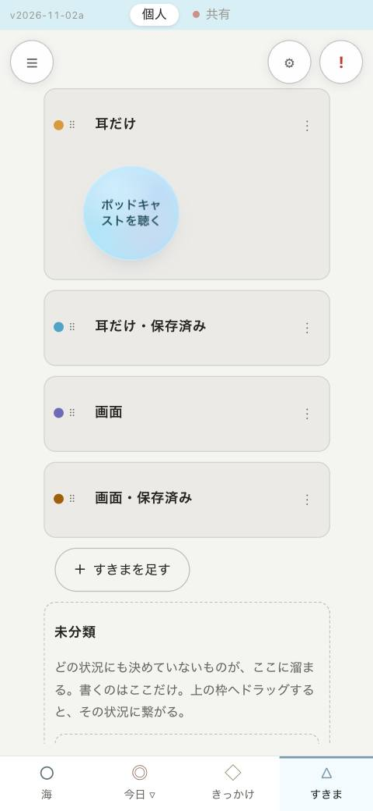
急ぐ・大事で分ける（優先度）
泡に「急ぐ」「大事」の2つの印を付けられます。分けるかどうかは自由で、印の無い泡は今までどおり海を漂います。急ぐの印が日付から勝手に付くこともありません。
- 盤で付ける：泡をタップして、盤の「◷ 急ぐ」「◆ 大事」を押します。下の行に今の区分が出て、盤を閉じると残ります。「印を外す」で元の「まだ分けていない」に戻ります。
- 四つに分けて見る：海では「▽ フィルター」の隣、今日の画面ではさいころの左にある「⊞」を押すと、泡が4つの区分に分かれます。左右が 急ぐ／急がない、上下が 大事／大事でない です。下の点線の帯に、まだ分けていない泡が並びます。今日の画面では、その日の泡だけが並びます（‹ › で日を移せます）。
- ドラッグで分ける：四つに分けた眺めで、泡を区分へドラッグすると、その区分の印が付きます。帯へ戻すと印が外れます。泡をタップすると、ふだんの盤が開きます。もう一度「⊞」を押すと元の眺めに戻ります（海では「もどす」でも戻ります）。印は泡に付くので、今日で分けたものは海でも同じ区分です。
区分は「いま」（急ぐ・大事）、「育てる」（急がない・大事）、「さっと」（急ぐ・大事でない）、「漂わせる」（どちらでもない）の4つです。分けた泡は、海と今日の画面で右上に区分の色の小さな点が付きます。区分ごとの数は出しません。
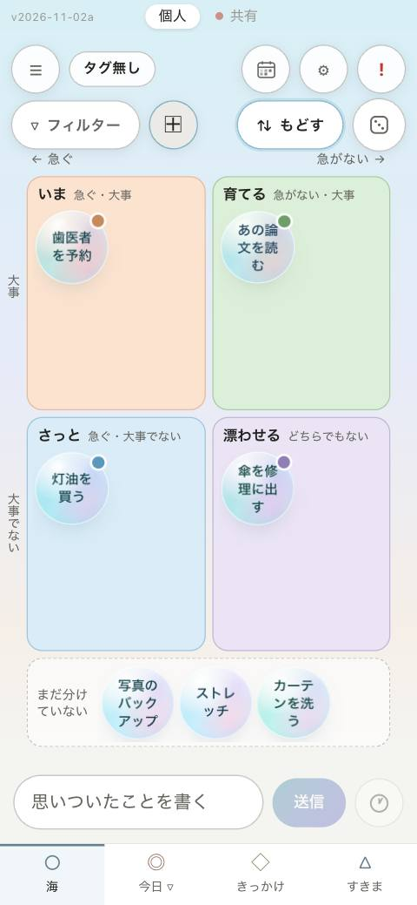
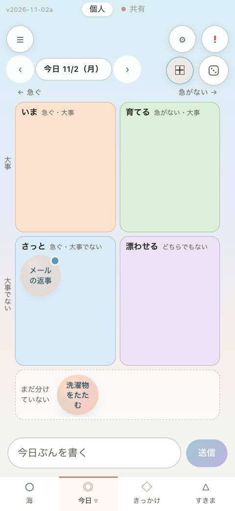
引き出しと設定
左上の ≡ は「引き出し」。いちばん上に海の名前が並び、押すとその海に切り替わります（「＋ 海を追加」で増やせます）。その下の、最近つかったもの・お気に入り・長期保留・タグごとの一覧から、1タップで今日に置けます。右上の ⚙ は設定です。設定のいちばん上に「ふりかえり」と、この「使い方」があります。
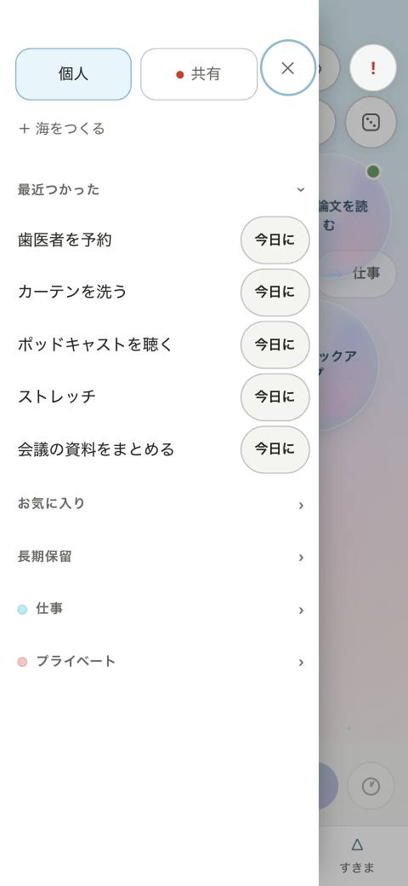
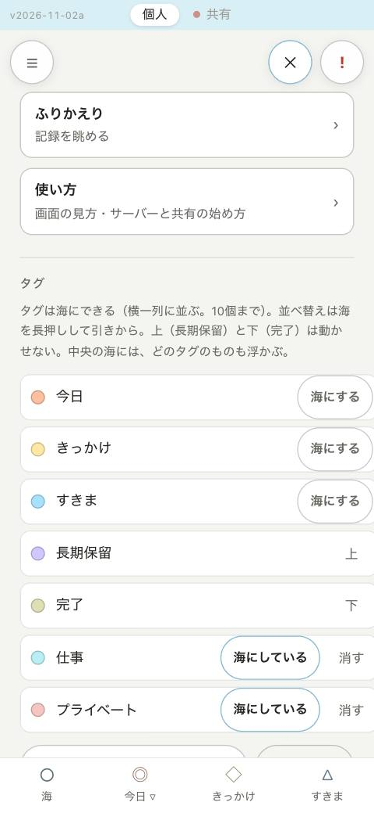
2. 海を切り替える・つくる
海は、名前を付けていくつでも作れます。いちばん上の薄い帯に海の名前が並び、今の海が白く浮きます。帯の名前か、左上の ≡（引き出し）のいちばん上の名前を押すと、画面を読み直して app 全体（海・今日・きっかけ・すきま・ふりかえり）がその海の記録になります。海が多いときは、帯を横になぞると続きが出ます。
- 個人：最初からある自分の海。名前は変えられず、消せません。水は空色です。サーバーを足すと、そのサーバーの「自分の記録」として「個人（サーバーの名前）」も並びます。
- 共有：前の版の「共有」。記録はそのまま引き継いでいて、ほかの海と同じく名前と色を変えられます（初めの色はマグマの赤）。
- 作った海：引き出しの「＋ 海を追加」か、設定の「海を設定する」の「＋ 海を追加」で、名前・水の色（マグマ・苔・夕暮れ・砂・墨）・ID・同期を決めて作ります。新しいサーバーを同期の先にするときは、設定のほうから（住所を入れる欄があります）。
1つの海が、1つの同期の単位です。海ごとに、どこと合わせるか（同期）を決めます。設定（⚙）の「海を設定する」に海が1つずつ並び、各行に同期の先（「この端末だけ」か「サーバー『名前』」）が出ます。
- ⚙：その海の名前・色・消す、同期の設定（この端末だけ／足してあるサーバー／新しいサーバーの住所と合言葉）、その海の ID。同期の先のサーバーの名前・住所・合言葉もここで直します（同じサーバーと合わせる海すべてに効きます）。
- ＋ 海を追加：名前・ID・同期を入れて足します。ID は海を見分ける裏の名前で、画面の名前とは別です。ほかの端末で足した海と同じ ID を入れると、同じ海になります（共有）。空にすると、ほかと重ならない ID で作ります。
- 個人はサーバーごとにあり、前からの個人のほかは「個人（サーバーの名前）」と出ます。個人の同期の先は替えられません。
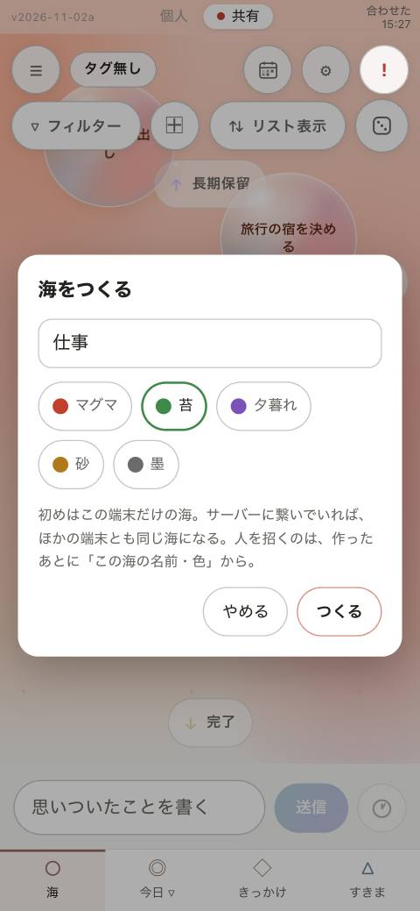
今の海の名前・色を直すときと、海を消すときは、引き出しの「この海の名前・色」か、設定の「海を設定する」の ⚙ を押します。人を招くときに使う海の ID（s で始まる名前）も、ここに出ます。消すと、その端末の記録を消し、自分のほかの端末の一覧からも外れます（サーバーに置いた記録は残ります）。
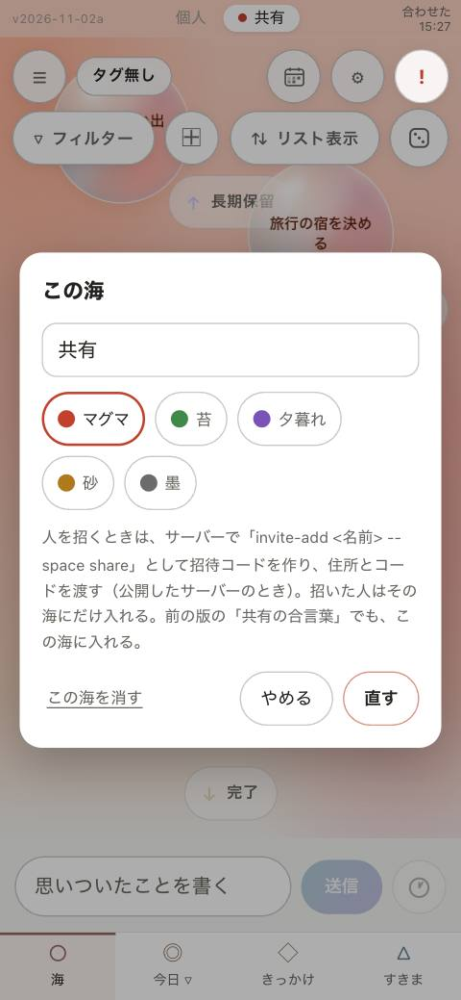
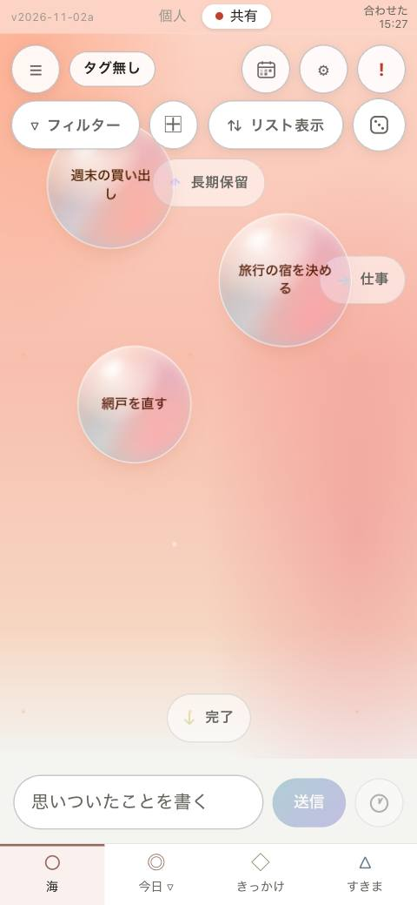
3. サーバーに繋ぐ（自分の端末）
複数の端末で同じ記録を使うには、自分で立てたサーバー（6章）を海の同期の先にします（設定の「海を設定する」の ⚙）。入るのはパスキー（Face ID・指紋・画面ロックの PIN）で、合言葉は使いません。サーバーが無くても、今までどおり端末の中だけで使えます。
- 持ち主（自分）がサーバーで招待コードを作る：
invite-add 自分のスマホ me:1（7章。me:1は 1 番の人＝持ち主の個人で、どの海にも入れます）。1回きり・24時間有効のABCD-EFGH-JKLMの形のコードが出ます。 - 端末で設定（⚙）を開き、「海を設定する」で、サーバーと合わせたい海の行の ⚙ を押す。「同期」で「新しいサーバー…」を選び、住所（
https://<名前>）を入れて「同期の設定を替える」を押す（前からの個人なら「このサーバーと合わせる」）。 - その海を［開く］で開いてから、もう一度その海の ⚙ を押す。サーバーの欄に「この海のサーバーに入る」が出ます。サーバーがパスキーの形なら、招待コードの欄が出ます。
- 招待コードを入れて「この端末を登録」を押し、Face ID・指紋などで確かめる。下の字が「『自分のスマホ』で入っている」「個人: 合わせた（時刻）」になれば繋がっています。
- 次からは、この端末で「パスキーで入る」を押すだけです（通行証は30日。切れたら押し直す）。
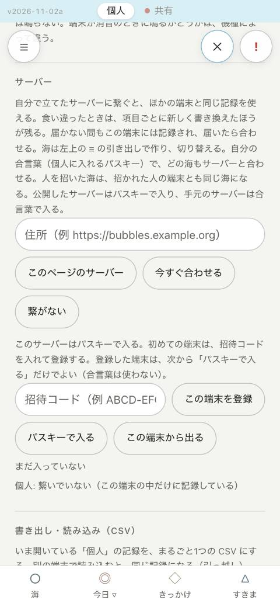
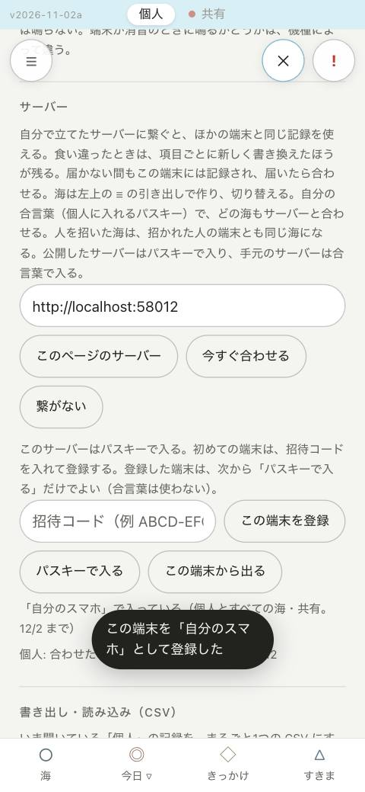
http://localhost。実際は https://<名前>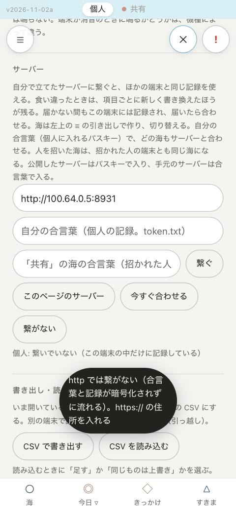
http:// の住所は断ります（記録が暗号化されずに流れるため）住所の頭を省くと https:// を補います。http:// で繋げるのは、自分の機械の中（localhost・127.0.0.1）だけです。パスキーは名前の住所でしか使えないので、IP の住所では登録できません。
食い違ったときは、項目ごとに新しく書き換えたほうが残ります。消したものも、消した時刻で比べます。サーバーに届かない間も端末には記録され、届いたら合わせます。
手元の Mac だけで使う形（start.command で起動したサーバー）は、パスキーではなく合言葉で入ります。そのときは「自分の合言葉」「『共有』の海の合言葉」の欄が出ます。自分の合言葉で、どの海もサーバーと合わせます。
4. 招かれた海に入る（招かれた人）
持ち主から「住所」と「あなたのぶんの招待コード」を受け取ったら、次のようにします。アプリを入れる必要はありません（ブラウザで開いて、ホーム画面に追加できます）。
- スマホのブラウザで住所を開き、ホーム画面に追加する。
- Bubbles の設定（⚙）の「海を設定する」で、「個人」の行の ⚙ を押し、「このサーバーと合わせる」を押す（住所は、開いたページのサーバーが初めから入っています）。
- 読み直したら、もう一度「個人」の ⚙ を押し、「この海のサーバーに入る」に招待コードを入れて「この端末を登録」を押し、Face ID・指紋などで確かめる。「『母のスマホ』で入っている（海の名前）」と出れば入れています。
- 招かれた海が、いちばん上の薄い帯と引き出しに、持ち主が付けた名前で出ます。押して切り替える。
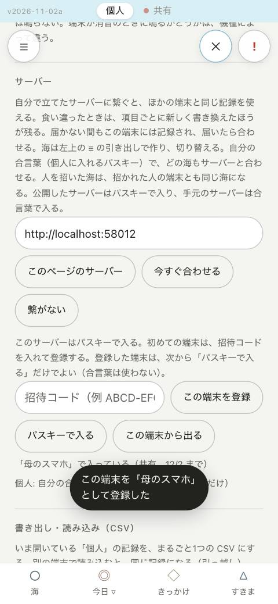
5. 繋がっていないとき
招かれた人の端末では、招かれた海は、サーバーと合わせられていない間は「読むだけ」になります。最後に見たものを色を抜いて出し、薄い帯の右に「繋がっていない／時刻 に見たもの」と出ます。入力欄は点線になり、書こうとすると「繋がると書ける」と知らせます。繋がったら自動で新しくなり、色も戻ります。
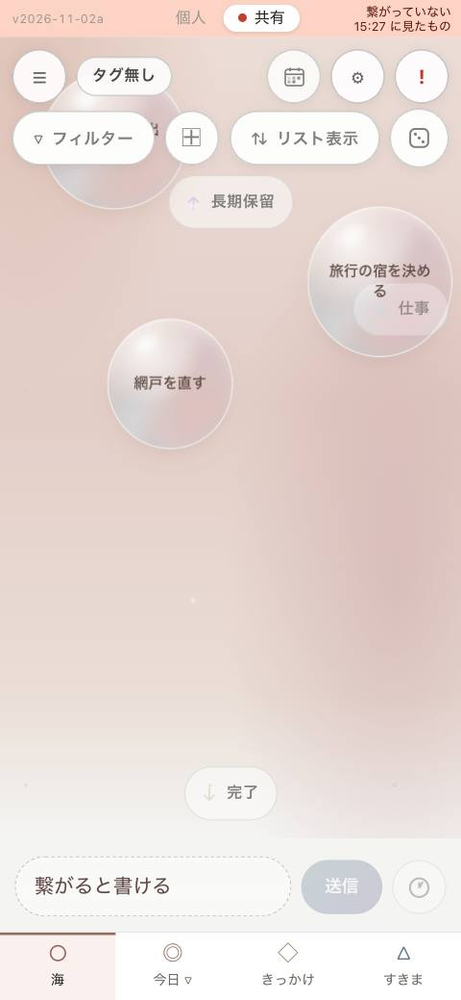
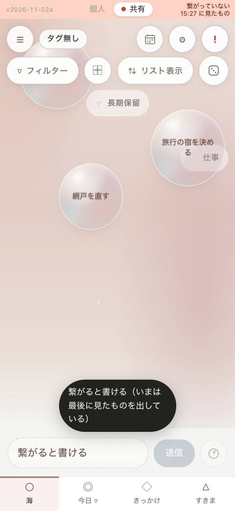
持ち主の端末では、個人もほかの海も、繋がっていなくても見た目は変わらず、今までどおり書けます（届いたら合わせます）。
6. サーバーを立てる（持ち主）
サーバーは1台で、個人・共有・作った海をいくつでも預かれます。Linux のサーバー（Oracle Cloud の無料枠など）に、名前の住所（例 bubbles.example.org。DuckDNS などの無料の名前でもよい）で公開します。server.py は自分の機械の中（127.0.0.1）だけで待ち受け、前段の Caddy が HTTPS を受けて渡します。
6-1. 準備
- 名前を、サーバーの公開の IP に向ける（DuckDNS なら管理画面で IP を入れる）。
- サーバーに Caddy を入れる（公式の手順）。fail2ban もあると、失敗をくり返す接続元を締め出せます。
- ファイアウォールで 80 番と 443 番だけを開ける（クラウドの側と、サーバーの中の両方。立ち上げのときに手順が出ます）。
6-2. 立ち上げる
git clone https://github.com/RH-REP/bubbles-todo.git
BUBBLES_DOMAIN=bubbles.example.org bash bubbles-todo/tools/server-setup.shスクリプトがすること：python3 と git の確認 → コードの取り込み → 記録の置き場（~/bubbles-data）づくり → テスト → systemd で常駐（パスキーで入る形。落ちたら起動し直す。書けるのは記録の置き場だけ）→ Caddy と fail2ban の設定 → 住所と、最初の端末の招待の手順を出す。2回目からは同じコマンドが「更新」として働き、名前も覚えています。
| 操作 | コマンド |
|---|---|
| 動いているか・住所 | bash bubbles-todo/tools/server-setup.sh status |
| コードを取り込んで起動し直す | bash bubbles-todo/tools/server-setup.sh update |
| 常駐をやめる（記録は残す） | bash bubbles-todo/tools/server-setup.sh uninstall |
| サーバーの記録（ログ） | sudo journalctl -u bubbles-todo |
update したあとは、スマホの Bubbles を「最近使ったアプリ」から払って完全に閉じ、開き直してください。古い版が残っていたら、もう一度。
7. 招待とパスキーの管理
端末は、招待コードで1台ずつ登録します。どれもサーバーを止めずに効きます。
# 招待コードを作る（1回きり・24時間）
# 個人は人ごと。人はサーバーに登録した順の番号で分ける（1 番 = サーバーを立てた持ち主）
# me:1 = 持ち主の端末（持ち主の個人と、すべての海に入れる）
# me = 新しい人の個人（その人の端末どうしだけ。番号は passkey-list に出る）
# me:2 = 2 番の人の、もう1台の端末
# share = 「共有」の海、s で始まる名前 = 作った海（アプリの「この海の名前・色」に出る ID）
bash bubbles-todo/tools/server-setup.sh invite-add 自分のスマホ me:1,share
bash bubbles-todo/tools/server-setup.sh invite-add 母のスマホ me,share
bash bubbles-todo/tools/server-setup.sh invite-add 母のタブレット me:2
bash bubbles-todo/tools/server-setup.sh invite-add 同僚 smvyvfsp3u8xc
# パスキーをほかの人の個人へ移す（new = 新しい番号の人）
bash bubbles-todo/tools/server-setup.sh passkey-person 母のスマホ new
# 一覧（使われていない招待 / 登録済みのパスキー）
bash bubbles-todo/tools/server-setup.sh invite-list
bash bubbles-todo/tools/server-setup.sh passkey-list
# 取り消す（その端末は次の要求から入れない）
bash bubbles-todo/tools/server-setup.sh passkey-remove 母のスマホ移された端末は、次に合わせたとき手元の個人をその人の個人に入れ替えます（前の中身は端末の中に控えとして残ります）。
登録できるパスキーは置き場（人ごとの個人・海）ごとに3つ、同時に使える端末は3台までです。端末を替えたら、古い端末のパスキーを passkey-remove で外してから招待し直します。
8. 引っ越し（ファイルの書き出し・読み込み）
すべての海の記録を1つのファイルにして、別の端末へ移せます。todo だけでなく、きっかけ・すきまの枠・タグ・急ぐ／大事の印・着手の記録・作業メモの履歴も入ります。
- 元の端末で、設定（⚙）の「記録を保存する・読み込む」→［書き出す］→［ファイル］を開く。新しい端末をつなぐときは「サーバーに入る鍵も入れる」に印を付け、「書き出す」→「ファイルを保存する」。合言葉が出るので、ファイルと別に書き留める。
- そのファイルを新しい端末へ写す（AirDrop・iCloud Drive など）。
- 新しい端末で「記録を保存する・読み込む」→［読み込む］→［ファイル］の「ファイルから読み込む」でファイルを選び、合言葉を入れる。今の記録は消さずに重ね、記録ごとに新しいほうが残ります。
9. 安全のための決まり
- 入るのはパスキーだけ。サーバーが持つのは公開鍵だけで、Face ID・指紋の情報はサーバーに来ない。
- 招待コードは1回きり・24時間。端末ごとに取り消せて、取り消しはすぐ効く。
- 端末は
https://でだけ繋ぐ（外へのhttp://は断る）。 - server.py は外から直接届かない（
127.0.0.1）。前段の Caddy が HTTPS・待ち時間・大きさの上限を受け持ち、fail2ban が失敗をくり返す接続元を締め出す。 - 海を指定した招待で登録した端末は、その海にだけ入れる（個人の記録やほかの海には入れない）。
- 記録の控えは、サーバーの
~/bubbles-data/backup/（個人）・share/backup/（共有）・seas/<海の ID>/backup/（作った海）に、書くたびに新しいほうから50個残る。
10. 困ったとき
| こうなった | こうする |
|---|---|
| 「サーバーがこの海を知らない」 | サーバーが前の版のまま。サーバーで server-setup.sh update。 |
| 「届かない: サーバーに届かない」 | 住所が合っているか。サーバーで server-setup.sh status。 |
| 招待コードで登録できない | コードは1回きり・24時間。使ったか切れたなら、持ち主に作り直してもらう。パスキーがいっぱい（3つ）のときも断られる。 |
| 入っていたのに入れなくなった | 通行証（30日）が切れた。設定の「パスキーで入る」を押す。それでも入れないなら、取り消された（passkey-remove）かもしれない。 |
| 「http では繋がない」 | 住所を https://<名前> にする。 |
| 招かれた海で書けない（点線） | サーバーと合わせられるまで読むだけ。いちばん上の薄い帯の右の字が「合わせた」になれば書ける。 |
| update したのに古いまま・下のタブが隠れる | Bubbles を「最近使ったアプリ」から払って完全に閉じ、開き直す。直らなければ、設定の下の「画面の大きさの記録」を写して持ち主に渡す。 |
この記事のスクリーンショットは、試し用の記録で撮ったものです。